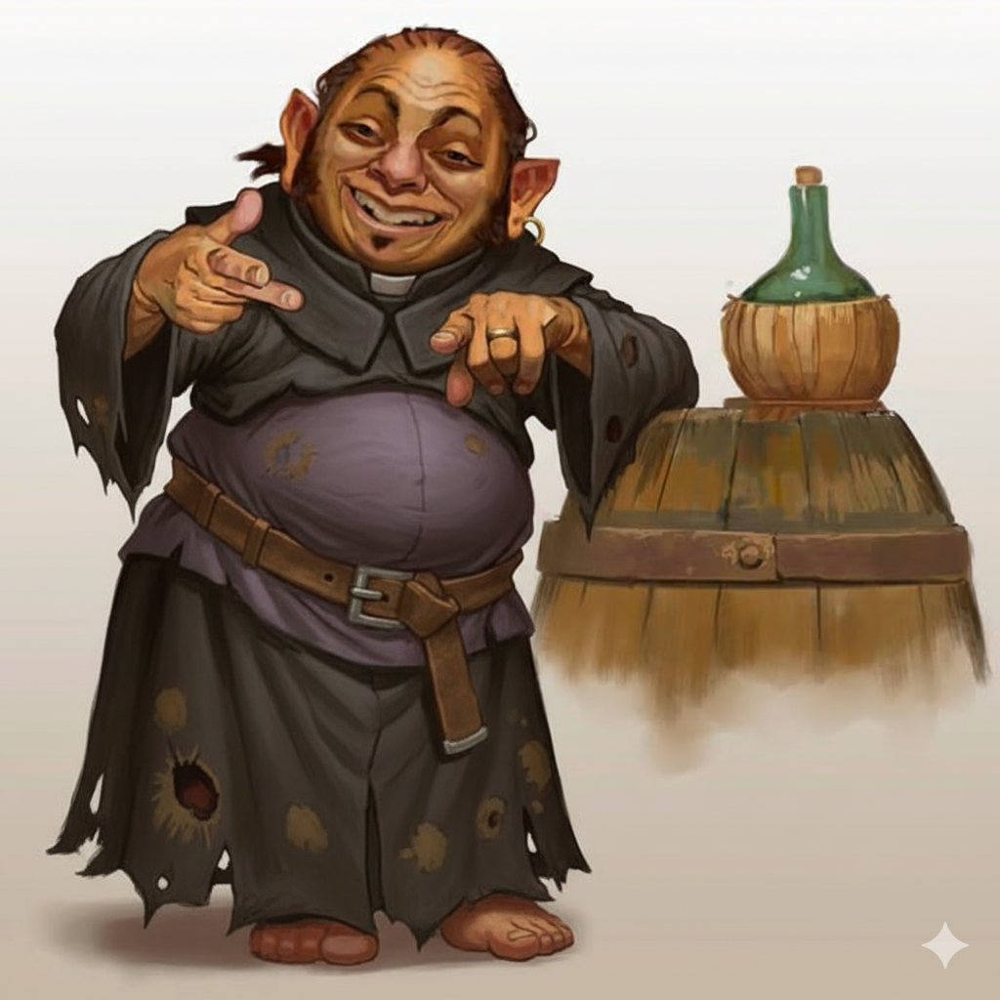

Benefit: as a maneuver, take rat-form. Size 1T, +2 speed, retain stats; cannot speak or take actions; only maneuvers usable are Escape Grab, Hide, Stand Up.
Drawback: while winded, the Director may spend 1 Malice at the start of your turn to force the transformation. Once forced, not again until you finish a respite.
Start of turn: roll 1d3, gain that much piety. Resets each encounter.
Pray (optional, no action): before the d3 roll —
Fate Effect — one creature within 10 automatically gets a tier 1 or tier 3 result (your choice) on their next power roll.
Trickery Effect — slide one creature within 10 up to 6 squares (5 + level).
| ≤ 11 | 4 holy damage |
| 12–16 | 6 holy damage |
| 17+ | 8 holy damage |
| ≤ 11 | 2 holy damage |
| 12–16 | 3 holy damage |
| 17+ | 5 holy damage |
| ≤ 11 | 5 holy damage; vertical pull 2 |
| 12–16 | 7 holy damage; vertical pull 3 |
| 17+ | 10 holy damage; vertical pull 4 |
| ≤ 11 | 2 sonic damage; push 1 |
| 12–16 | 3 sonic damage; push 2 |
| 17+ | 5 sonic damage; push 3 |
| ≤ 11 | Each target gains 5 temporary stamina |
| 12–16 | Each target gains 10 temporary stamina |
| 17+ | Each target gains 15 temporary stamina |